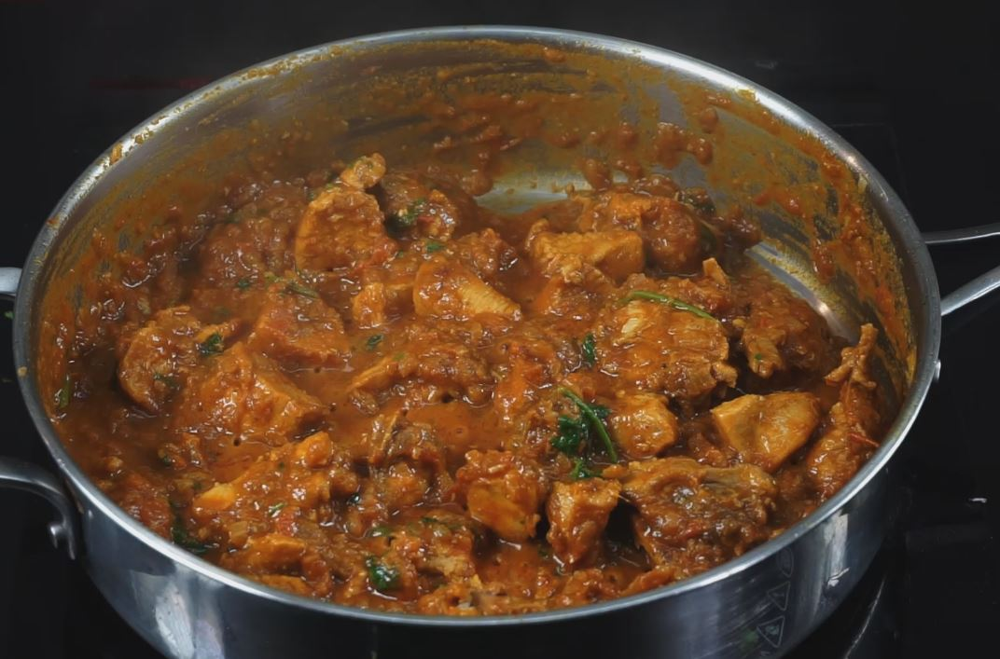

Bussin Gravy

Description
The Indian Chicken gravy is one of the most beloved dishes to come out of the subcontinent.
It is charecterised by its distinct red or orangish color and the famous aroma of Indian Spices.
This chicken gravy is a real swiss knife in terms of dishes because it can be paired with almost anything you can think of. Breads,rotis,rice,biriyani you name it. It is well liked and enjoyed by everyone with a soft corner for spice and chicken.
Ingredients
- Chicken 500g
- Chicken Masala
- Salt
- Indian Spice Mix
- Onions and Tomatoes
- Ginger Garlic paste
Steps
- Add oil to the pan and add mustard.
- Add the chopped onions and tomatoes and saute them until they are caramlized lightly
- Add the chicken masala 6 tbsps and the spice mix 3 tbsps
- Add the chicken now and let it cook for a minute
- Add 3 tbsp of salt and add 500ml of water and let it cook for 10 mins
- Check for preferred consistency and once it is done garnish it to your liking. Voila!
Hope you enjoy this dish with your loved ones. Let us know in the comments!